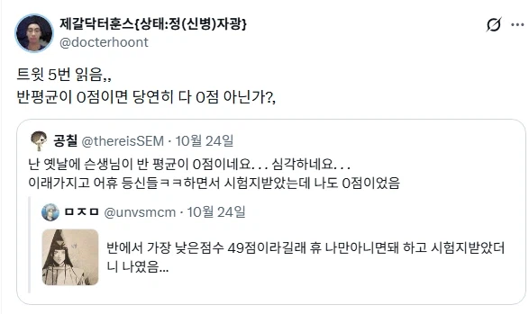

그런 어려운말 하지마

그런 어려운말 하지마
틀렸을때 점수 안까는 시험도 있어?
보통은 점수를 안주지 까진 않지?
일반적인 시험은 점수를 안 주는거지 까는건 아니니까.
정답 +2, 오답 -1, 안풀면 0점 이런식으로 오답에는 마이너스 점수 부여하는 방식으로 치루는 시험도 있음.
근데 본문은 아닐거 같음.
찍어서 때려맞추는거에 대한 리스크를 올리는거구나 요것도 나쁘진 않네
수능 안봤니
보통 시험이 100점 만점에 틀리면 까는거 아냐?
다 맞으면 100점이고
맞아야 점수를 주는거지, 틀렸다고 까는게 아니지. 그럼 백지로 내면 100점이냐?
보통 시험은 100점 만점에 틀리면 0점 처리해서 점수를 안 주지, 틀리면 -1점, -2점 이렇게 까지 않지
2번째 같은애가 5명중 1명꼴로 있다는 재미없는 인간
솔찍히 평균이 0점이면 출제한 사람이 문제긴해......
0점 가능한가 공부 못하는 반이어도 우등생은 있을텐데. 꼴통학교에 꼴통만 모아둔 반도 아니고..
중학생들인데 고등학생 3학년문제 시험삼아 풀어보게 했다 치면 이해됨
고 3문제라도 5지선다면 20점은 맞아야..
이것도 0명 모집 같은 개념이여?
마음에 들지 않아서 점수를 받은자가 없으니 얼추 비슷한건가..
쪼끔 진지한 이야기 하자면 평균이 0점이면 문제가 잘못나간거긴 해 ㅋㅋㅋ
창작물의 수준은 창작자의 지능을 넘지 못한다

반평균씨 나와주세요

이번 시험의 주제는.... '최대한 많은 사람이 동일한 점수 받기'입니다
오답이면 마이너스가 아니면 평균 0점이 어떻게 나옴???
문제수가 적고 전부 주관식이면 가능은하지
일반적인 시험이아니라 쪽지시험인데 난이도
잘못냇을경우 전부 0점이면
아 전부 주관식으로 할 수도 있구나 ㅇㅋㅇㅋ
0점이면 시험지나 omr카드 리더기를 의심해 봐야 하는거 아닌가??
그냥 선행 얼마나 되어있는지 체크하는 시험이면 0점 뜰수도 있긴한데
반전체가 그러면 심각하지
0점 나오면 바로 학업성적관리위원회 열릴듯
흔한 억지 공감할려고 쓴 저지능 망상 글이잖아
틀리면 점수 까는 시험도 있어서